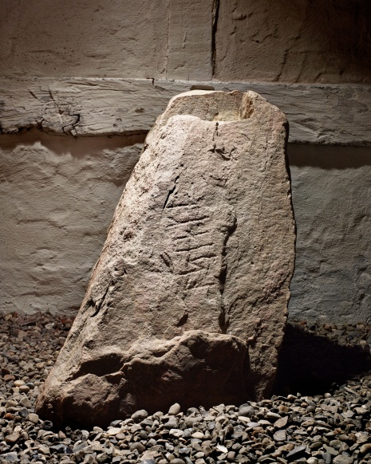

Faaborg
Granit
Höhe: 100 cm
Breite: 32 - 50 cm
Dicke: 42 - 45 cm
Runenhöhe: 8,5 - 12,2 cm
Runeninschrift :
Aslak (s Stein)

90 - Faaborg - Letztes Update 01.04.2024
Listennummer : DK Fyn 51
Navidaten: 55.09574 10.23875 - oder: Havnegade 3, 5600 Faaborg, Dänemark
Transliteration: ąslak(R)
Bei diesem Runenstein handelt es sich um einen Neufund aus dem Jahr 2006. Nach 147 Jahren ein neuer Runenstein Fund auf Fünen! Der Stein wurde gefunden, als er Teil des Küstenschutzes war. 2,5 km östlich-südöstlich des Hafens von Faaborg, wo er mit der Runenseite zum Wasser hin gelegen hat. Der ursprüngliche Standort des Steins ist unbekannt. Offenbar seit dem 18.06.2021 wird er nun dauerhaft in dem neuen Øhavsmuseet in der Havnegade 3 in 5600 Faaborg, in einem renovierten Gebäude auf dem ehemaligen Schlachthofareal, ausgestellt. Am 15.12.2023 wurden vor Ort Pläne des international erfolgreichen Architekturbüros "Pax.dk" vorgestellt, das eine entsprechende Ausschreibung für einen Erweiterungsbau gewonnen hat, worüber das Museum in Zukunft deutlich vergrößern werden wird.
Im Herbst 2006 kontaktierte der 2018 verstorbene Vorsitzende der Grundbesitzervereinigung Strandgårdsparken in Faaborg, Tage Andersen, Peter Thor Andersen im Museum in Faaborg. Er glaubte nichts geringeres als einen Runenstein in der Steinaufschüttung am Küstenschutz gesehen zu haben. Das Museum begann eine Zusammenarbeit mit Karsten Kjer Michaelsen von den Odense Museeen und ließ den Stein herausholen. Besonders überwältigend war die Aufmerksamkeit der Medien. Bald gab es auch Anfragen an das Museum, weil einige glaubten, einen verstorbenen Steinmetz zu kennen, der in den 1960er Jahren seinen Namen (Aksel) in den Stein gemeißelt hatte. Es gab auch andere Überlegungen zum Text auf dem Stein und seine Herkunft. Die Runenexpertin des Nationalmuseums Kopenhagen, Lisbeth M. Imer, kam nach Faaborg und konnte mit Sicherheit feststellen, dass es sich um einen der frühesten Runensteine Dänemarks aus dem 7. oder 8. Jahrhundert handelte. Die aus nur 6 Runen bestehende Inschrift "ąslak(R)" interpretierte sie dahingehend, dass es sich bei den Runen nicht um einen Titel oder Rang, sondern lediglich um den Namen Aslak mit dem Zusatz "R" handelt. Die Bedeutung ist darüber also der männliche Vorname Aslak, geschrieben auf Altdänisch und mit Runen aus dem jüngeren 16-Zeichen-Futhark. Aslaks, d.h. dass der Stein Aslaks Stein war.
Der Stein - Granit - weist auf seiner kompletten Oberfläche viele Risse auf und auf zwei Seiten sind Spuren moderner Absplitterungen sichtbar. Die erste und letzte Rune, der nur aus 6 Runen bestehenden Inschrift, sind beschädigt.
Im Vorfeld zu dem 2016 erschienenen Buch "Danmarks Runesten - en fortælling" reiste Lisbeth M. Imer (*1973, Runologin am Nationalmuseum Kopenhagen) mit dem Fotografen Roberto Fortuna zur Bestandsaufnahme durch die Lande. Dieser hat die Runensteine mit Schräglicht aufgenommen und darüber wirklich herausragende Fotos erzielt. Diese Aufnahme - der digitalen Sammlung des Nationalmuseums Kopenhagen entnommen - entstand am 04.03.2014. Lizenz: CC-BY-SA

Ich selbst habe den Runenstein noch nicht im Original gesehen, aber es wird dann mal Zeit! :-)
Im Internet finden sich über die Homepage der dänischen Runendatenbank hier alle Infos zu diesem Runenstein (Dort findet sich auch ein anderes Foto das wohl kurz nach der Entdeckung angefertigt wurde und eine Zeichnung).
Die Infos aus Fund og Fortidsminder zu dem Runenstein finden sich hier.
Über die Webseite "Runes" - ein Forschungsprojekt der Akademie zu Göttingen - kann man diese Informationen zu diesem Runenstein abrufen.
Über diesen Link kann man die Abhandlung "Runestenen fra Faaborg og de ældste danske runesten" in dänischer Sprache von Lisbeth M. Imer, Runologin des Nationalmuseums Kopenhagen, abrufen (z.B. über einen Google Account bei www.academia.edu).
Ein weiteres Foto findet sich über diesen Link mit einem Kurzbericht - vom 19.11.2007 - in dänischer Sprache.
Mehrere Fotos des Runensteins - sowie von einigen anderen Runensteinen - kann man auf die Webseite anschauen.